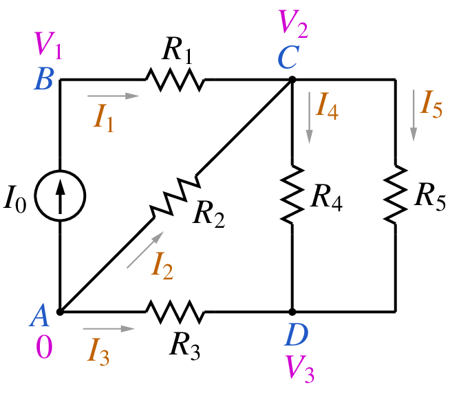
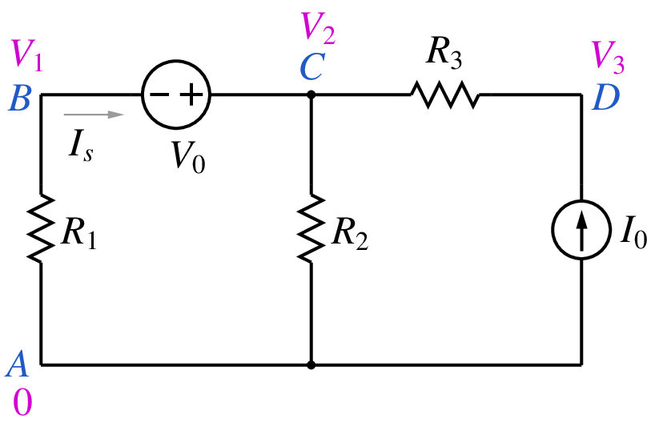

Modified nodal analysis¶
In this section, we will look at the Modified Nodal Analysis (MNA) approach which is used by GSEIM for assemling equations arising from electrical circuits. To find the solution for an electrical circuit, the following constraints need to be satisfied simultaneously:
- Kirchoff’s current law (KCL) at each node,
- Kirchoff’s voltage law (KVL) for each loop,
- equation(s) describing the behaviour of each element involved in the circuit (e.g., resistor, capacitor, diode, transistor, switch, transformer).
The most common approach employed to solve this set of equations is Modified Nodal Analysis. As the name suggests, MNA is a modified version of Nodal Analysis (NA) which is based on KCL equations written in terms of node voltages. In the following, we will describe the NA approach with the help of an example, see why it needs to be modified, and then look at the MNA approach. For now, we will restrict our discussion to linear circuits operating under DC conditions. In later sections, we will see how the MNA approach can be used for circuits involving nonlinear components and time derivatives.
Nodal analysis¶
In nodal analysis, one of the circuit nodes is taken as the reference node (ground) and is assigned a node voltage of \(0\,{\textrm{V}}\). All other node voltages are defined with respect to the reference node. The element currents are written in terms of the node voltages, and the sum of the element currents at each node is equated to zero, as required by KCL. The resulting set of equations is then solved for the unknowns – the node voltages. Other quantities of interest such as currents, branch voltages are computed by post-processing the solution vector, i.e., the node voltages. Let us illustrate this process with an example.
Consider the circuit shown below.
{kind=link}
We take one of the nodes (node A) as the reference node. The other nodes (B, C, D) are assigned node voltages \(V_1\), \(V_2\), \(V_3\). We write the various element currents in terms of the node voltages, e.g., \(I_1 = G_1(V_1-V_2)\), \(I_3 = G_3(0-V_3)\), where \(G_1 = 1/R_1\), etc. Finally, we substitute the expressions for the currents in the KCL equations at nodes B, C, D, and get the following set of equations.
In terms of node voltages, we have
The above equations can be written in a matrix form:
We now have a matrix description of the circuit equations: \({\bf{Y}}{\bf{V}} = {\bf{I}}_S\). The matrix \({\bf{Y}}\) is called the admittance matrix, \({\bf{V}}\) is the vector of node voltages which we want to obtain, and \({\bf{I}}_S\) is the current source vector, which contains \(\pm I_k\), \(I_k\) being the current of an independent current source connected at node \(k\). For larger circuits, the admittance matrix is typically sparse, with only 10 to 15% non-zero entries. The sparse nature of the admittance matrix can be exploited to reduce the storage requirement and the number of arithmetic operations (and therefore the CPU time) in solving the linear system.
MNA¶
If there are voltage sources in the circuit, the NA approach needs to be modified. As an example, consider the following circuit.
{kind=link}
We take A as the reference node and assign \(V_1\), \(V_2\), \(V_3\) to the remaining nodes. When we attempt to write KCL at node B or C, we encounter a problem – the current through the voltage source cannot be written in terms of the node voltages \(V_1\) and \(V_2\), and the nodal analysis approach therefore needs to be modified. In the MNA approach, we augment the solution vector with currents through voltage sources, and the KCL equations are written in terms of the node voltages as well as these additional variables, i.e., currents through voltage sources (including dependent voltage sources CCVS, VCVS).
Using the MNA approach for the above circuit, we get
We now have four unknowns (\(V_1\), \(V_2\), \(V_3\), \(I_s\)) but only three equations. The fourth equations comes from the element equation for the voltage source, viz., \(V_2 - V_1 = V_0\). The equations can be written in a matrix form:
We can already guess what a circuit simulator must be doing behind the scenes for a linear circuit under DC conditions:
- Read the “netlist” (see GSEIM Organisation), which is a description of the connections in the circuit (the topology) and the specification of each element (the behaviour).
- Decide “what goes where” in the matrix equation: This step is called “parsing”
where we need to figure out the following.
- How many variables (unknowns)?
- What does each row of the matrix correspond to? A KCL or the branch equation for one of the voltage sources?
- Where are the non-zero entries in the MNA matrix? How is each entry computed in terms of the circuit parameters?
- Solve the matrix equation: This is the most crucial part of a circuit simulator since it generally takes the largest chunk of the CPU time, particularly for large circuits. The reason is easy to understand: The number of multiplications involved in solving \({\bf{A}}{\bf{x}} = {\bf{b}}\), where \({\bf{A}}\) is an \(N\times N\) matrix, goes as \(N^3\). By exploiting sparsity, the number of multiplications can be reduced, but the dependence on \(N\) remains superlinear.
- Calculate the quantities of interest by post-processing. Solving the MNA circuit equations yields the node voltages and voltage source currents. These can be used to obtain other quantities simply by post-processing, i.e., without solving any additional equations.
Note that we have described the MNA approach for linear circuits in a DC situation only. It needs to be extended to nonlinear circuits and also to elements involving time derivatives (e.g., capacitors and inductors). We will consider that in later sections.